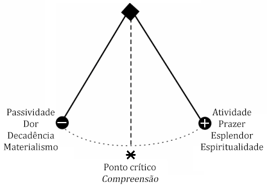
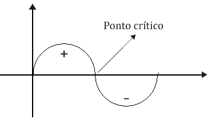
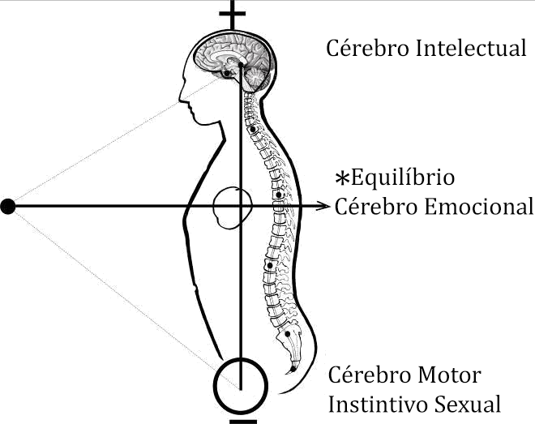

Conferência nº 29
A LEI DO PÊNDULO
Torna-se interessante ter um relógio de parede em casa, não só para saber as horas, senão também para refletir um pouco. Sem o pêndulo o relógio não funciona; o movimento do pêndulo é profundamente significativo.
Nos antigos tempos, o dogma da evolução não existia; então, os sábios entendiam que os processos históricos se desenvolvem sempre de acordo com a Lei do Pêndulo.
Tudo flui e reflui, sobe e desce, cresce e decresce, vai e vem de acordo com esta lei maravilhosa.
Nada tem de estranho que tudo oscile, que tudo esteja submetido ao vai e vem do tempo, que tudo evolua e involua.
Em um extremo do pêndulo está a alegria, no outro, a dor; todas as nossas emoções, pensamentos, anelos e desejos oscilam de acordo com a Lei do Pêndulo.
Esperança e desespero; pessimismo e otimismo; paixão e dor; triunfo e fracasso; lucro e perda correspondem, certamente, aos dois extremos do movimento pendular.
Surgiu o Egito com todo seu poderio e senhorio às margens do rio sagrado; mas, quando o pêndulo se foi para o outro lado, quando se levantou pelo extremo oposto, caiu o país dos faraós e se levantou Jerusalém, a cidade querida dos profetas.
Caiu Israel, quando o pêndulo mudou de posição e surgiu, no outro extremo, o império Romano.
O movimento pendular levanta e afunda impérios; faz surgir poderosas civilizações e logo as destrói, etc.
Podemos colocar no extremo direito do pendulo as diversas escolas pseudoesotericas e pseudo-ocultistas, religiões e seitas.
Podemos colocar no extremo esquerdo do movimento pendular todas as escolas de tipo materialista, marxista, ateísta, ceticista, etc. Antíteses do movimento pendular, mutantes, sujeitas à permutação incessante.
O fanático religioso devido a qualquer acontecimento insólito ou decepção, pode ir ao outro extremo do pêndulo, converter-se em ateísta, materialista, cético.
O fanático materialista, ateísta, devido a qualquer fato inusitado, talvez um acontecimento metafísico, transcendental, um momento de terror indizível, pode levá-lo ao extremo oposto do movimento pendular a convertê-lo num reacionário religioso insuportável.
Exemplos: Um sacerdote, vencido numa polêmica por um esoterista, desesperado, tornou-se incrédulo e materialista.
Conhecemos o caso de uma dama ateísta, materialista e incrédula que, devido a um fato metafísico concludente e definitivo, converteu-se em expoente magnífico do esoterismo prático.
Em nome da verdade devemos declarar que o ateísta materialista verdadeiro e absoluto, é uma farsa, não existe.
Ante a proximidade de uma morte inevitável, ante um instante de indizível terror, os inimigos do Eterno, os materialistas incrédulos passam instantaneamente, ao outro extremo do pêndulo e acabam orando, chorando e clamando com fé infinita e enorme devoção.
O mesmo Karl Marx, autor do Materialismo Dialético, foi um fanático religioso judeu; e, depois de sua morte, renderam-lhe pompas fúnebres de grande rabino.
Karl Marx elaborou sua Dialética Materialista com um só propósito: "Criar uma arma para destruir a todas as religiões do mundo por meio do ceticismo".
É um caso típico dos ciúmes religiosos levados ao extremo. De modo algum poderia aceitar Marx a existência de outras religiões e preferiu destruí-las mediante a sua Dialética.
Karl Marx cumpriu um dos protocolos de Sião que diz textualmente: "Não importa que enchamos o mundo de materialismo e de repugnante ateísmo; no dia em que nós triunfarmos, ensinaremos a religião de Moisés, devidamente codificada e em forma dialética, e não permitiremos, no mundo, nenhuma outra religião".
Muito interessante resulta que, na União Soviética, as religiões sejam perseguidas e ao povo se ensine dialética materialista; enquanto, nas sinagogas, estuda-se o Talmude, a Bíblia e a religião, e trabalham livremente sem problema algum.
Os amos do governo russo são fanáticos religiosos da lei de Moisés; mas eles envenenam o povo com essa farsa do Materialismo Dialético.
Jamais nos pronunciaríamos contra o povo de Israel; só estamos declarando contra certa elite de duplo jogo que, perseguindo fins inconfessáveis, envenena o povo com a Dialética Materialista, enquanto, em secreto, pratica a religião de Moisés.
Materialismo e espiritualismo, com todas as suas sequelas de teorias, prejulgamentos e preconceitos de toda espécie, processam-se na mente de acordo com a Lei do Pêndulo e mudam de moda de acordo com os tempos e os costumes.
Espírito e matéria são dois conceitos muito discutíveis e espinhosos que ninguém entende.
Nada sabe a mente sobre o espírito; nada sabe sobre a matéria.
Um conceito não é mais que isso: um conceito. A Realidade não é um conceito, ainda que a mente possa forjar muitos conceitos sobre a realidade.
O espírito é o espírito (o Ser) e só a si mesmo pode conhecer-se.
Escrito está: "O Ser é o Ser e a razão de Ser é o mesmo Ser".
Os fanáticos do deus matéria, os cientistas do Materialismo Dialético são empíricos e absurdos em cem por cento. Falam sobre matéria com uma autossuficiência deslumbrante e estúpida, quando em realidade, nada sabem sobre a mesma.
O que é a matéria? Qual destes tontos cientistas o sabe? A tão cacarejada matéria é também um conceito demasiado discutível e bastante espinhoso.
Qual é a matéria? O algodão? O ferro? A carne? O amido? Uma pedra? O cobre? Uma nuvem ou o quê? Dizer que tudo é matéria seria tão empírico e absurdo como assegurar que todo o organismo humano é um fígado, ou um coração, ou um rim. Obviamente, uma coisa é uma coisa e outra coisa é outra coisa; cada órgão é diferente e cada substância é distinta. Então, qual de todas estas substâncias é a tão cacarejada matéria?
Com os conceitos do pêndulo joga muita gente; porém, em realidade, os conceitos não são a realidade.
A mente somente conhece formas ilusórias da natureza; porém, nada sabe sobre a verdade contida em tais formas.
As teorias passam de moda com o tempo e com os anos e o que aprendemos na escola, resulta que depois já não serve. Conclusão: ninguém sabe nada.
Os conceitos da extrema-direita e da extrema-esquerda do pêndulo; passam como as modas das mulheres e todos esses são processos da mente; coisas que sucedem na superfície do entendimento; tolices, vaidades do intelecto.
A qualquer disciplina psicológica opõe-se outra disciplina; a qualquer processo psicológico, logicamente estruturado, opõe-se outro semelhante, e depois de tudo, o que?
O real, a verdade é o que nos interessa; mas, isto não é questão do pêndulo; não se encontra entre o vai e vem das teorias e crenças.
A verdade é o desconhecido de instante em instante, de momento em momento.
A verdade está no centro do pêndulo, não na extrema-direita e tampouco, na extrema-esquerda.
Quando a Jesus perguntaram: "O que é a verdade?" Guardou um profundo silêncio. E, quando ao Buda fizeram a mesma pergunta, deu as costas e se retirou.
A verdade não é questão de opiniões, nem de teorias, nem de conceitos de extrema-direita ou de extrema-esquerda.
O conceito que a mente possa forjar sobre a verdade, jamais é a verdade.
A idéia que o entendimento tenha sobre a verdade, nunca é a verdade.
A opinião que tenhamos sobre a verdade, por muito respeitável que seja, de modo algum é a verdade.
Nem as correntes espiritualistas, nem seus oponentes materialistas, podem conduzir-nos jamais a verdade.
A verdade é algo que deve ser experimentado em forma direta, como quando colocamos o dedo no fogo e nos queimamos, ou como quando a pessoa engole água e se afoga.
O centro do pêndulo está dentro de nós mesmos e é ali onde devemos descobrir, experimentar, em forma direta, o Real, a Verdade.
Necessitamos autoexplorar-nos diretamente para nos autodescobrir e conhecer-nos profundamente a nós mesmos.
A experiência da verdade só advém quando temos eliminado os elementos indesejáveis que, em seu conjunto, constituem o Mim mesmo.
Só eliminando o erro, vem a verdade. Só desintegrando o Eu Mesmo, meus erros, meus prejulgamentos e temores, minhas paixões e desejos, crenças e fornicações, encastelamentos intelectuais e autossuficiência de toda espécie, advém a nós a experiência do Real.
A verdade nada tem a ver com o que se tenha dito ou deixado de dizer; com o que se tenha escrito ou deixado de escrever; ela somente advém, a nós, quando o Mim Mesmo está morto.
A mente não pode buscar a verdade, porque não a conhece. A mente não pode reconhecer a verdade, porque jamais a conheceu. A verdade advém a nós de forma espontânea, quando temos eliminado todos os elementos indesejáveis que constituem o Mim Mesmo, o Eu Mesmo.
Enquanto a Consciência continue engarrafada entre o Eu Mesmo, não poderá experimentar isso que é o Real, isso que não é do tempo, isso que está mais além do corpo, dos afetos e da mente, isso que é a Verdade.
Quando o Mim Mesmo fica reduzido a poeira cósmica, a Consciência se libera para despertar definitivamente e experimentar, de forma direta, a Verdade.
Com justa razão disse o Grande Kabir Jesus: "Conhecei a verdade e ela os fará livres".
De que serve ao homem conhecer cinquenta mil teorias se jamais experimentou a Verdade?
O sistema intelectual de qualquer homem é muito respeitável; mas, a qualquer sistema se opõe outro e nem um, nem outro é a Verdade.
Mais vale nos autoexplorar para nos autoconhecer e chegar a experimentar, um dia, em forma direta, o Real, a Verdade.
Conceito e Realidade
Quem ou o quê pode garantir que conceito e realidade resultem absolutamente iguais?
O conceito é uma coisa e a realidade é outra e existe tendência a sobrestimar nossos próprios conceitos.
Realidade igual a conceito é quase impossível; no entanto, a mente, hipnotizada pelo seu próprio conceito, supõe sempre que este e realidade são iguais.
A um processo psicológico qualquer, corretamente estruturado mediante uma lógica exata, opõe-se outro diferente, recém-formado com lógica similar ou superior; então o quê?
Duas mentes, severamente disciplinadas dentro de férreas estruturas intelectuais, discutindo entre si, polemizando sobre tal ou qual realidade, crêem, cada uma, na exatidão de seu próprio conceito e na falsidade do conceito alheio; mas, qual delas tem a razão? Quem poderia, honradamente, inclinar-se por um ou outro dos polemistas? Como poderíamos, honradamente, ser fiadores em um ou outro caso? Em qual deles, conceito e realidade, resultam iguais?
Inquestionavelmente, cada cabeça é um mundo e em todos e em cada um de nós existe uma espécie de dogmatismo pontifício e ditatorial que quer fazer-nos crer na igualdade absoluta de conceito e realidade.
Por muito fortes que sejam as estruturas de um raciocínio, nada pode garantir a igualdade absoluta de conceito e realidade.
Sem dúvida, a mente fascinada supõe, sempre, que qualquer conceito emitido resulta sempre igual à realidade.
Aqueles que estão auto encerrados dentro de qualquer procedimento logístico intelectual, querem fazer sempre coincidir a realidade dos fenômenos com os elaborados conceitos e isto não é mais que o resultado da alucinação raciocinativa.
Abrir-se ao novo é a difícil facilidade do clássico; desgraçadamente, a pessoa quer descobrir, ver em todo fenômeno natural seus próprios prejulgamentos, conceitos, preconceitos, opiniões, teorias; ninguém sabe ser receptivo, ver o novo com mente limpa e espontânea.
Que os fenômenos falassem ao sábio seria o indicado; desafortunadamente, os sábios destes tempos não sabem ver os fenômenos; só querem ver nos mesmos a confirmação de todos os seus preconceitos.
Ainda que pareça incrível, os cientistas modernos nada sabem sobre os fenômenos naturais.
Quando vemos nos fenômenos da natureza exclusivamente nossos próprios conceitos, certamente não estamos vendo os fenômenos, senão os conceitos.
Contudo, os tolos cientistas, alucinados por seu fascinante intelecto, crêem, de forma estúpida, que cada um de seus conceitos é absolutamente igual a tal ou qual fenômeno observado, quando a realidade é diferente.
Não negamos que nossas afirmações sejam rechaçadas por todo aquele que esteja auto-encerrado por tal ou qual procedimento logístico; inquestionavelmente, a condição pontifícia e dogmática do intelecto de modo algum poderia aceitar que tal ou qual conceito, corretamente elaborado, não coincida exatamente com a realidade.
Tão logo a mente, através dos sentidos, observe tal ou qual fenômeno, apressa-se de imediato a rotulá-lo com tal ou qual termo científico que inquestionavelmente só vem a servir de remendo para tampar a própria ignorância.
A mente não sabe realmente ser receptiva ao novo; mas sabe inventar complicadíssimos termos com os quais pretende qualificar de forma auto-enganosa o que certamente ignora.
Falando desta vez em sentido socrático, diremos que a mente não somente ignora senão, ademais, ignora que ignora.
A mente moderna é terrivelmente superficial; especializou-se em inventar termos dificilíssimos para tampar sua própria ignorância.
Existem duas classes de ciência: a primeira não é mais que essa podridão de teorias subjetivas que abundam por ai. A segunda é a ciência pura dos grandes iluminados, a Ciência Objetiva do Ser.
Indubitavelmente, não seria possível penetrar no anfiteatro da ciência cósmica, se antes não morrêssemos em nós mesmos.
Necessitamos desintegrar todos esses elementos indesejáveis que carregamos em nosso interior e que em seu conjunto constituem em si mesmo, o Eu da psicologia.
Enquanto a Consciência Superlativa do Ser continue engarrafada entre o mim mesmo, entre meus próprios conceitos e teorias subjetivas, resulta absolutamente impossível conhecer diretamente a crua realidade dos fenômenos naturais em si mesmos.
A chave do laboratório da natureza a tem, em sua mão direita, o Anjo da Morte.
Muito pouco podemos aprender do fenômeno do nascimento; mas da morte poderemos aprender tudo.
O templo inviolado da ciência pura encontra-se no fundo da negra sepultura. Se o germe não morre, a planta não nasce. Só com a morte advém o novo.
Quando o ego morre a Consciência desperta para ver a realidade de todos os fenômenos da natureza tal qual são em si mesmos e por si mesmos.
A Consciência sabe o que diretamente experimenta por si mesma: o cru realismo da vida mais além do corpo, dos afetos e da mente.
Gráficos complementares
Um ascenso sempre é sucedido por um descenso de igual magnitude. A linha do meio é a verdade. O Ponto Crítico permite contemplar os dois extremos para transcendê-los.

Para alcançar a Compreensão devemos evitar polarizar-nos no Intelecto ou no Sexo.A Compreensão é uma faculdade do coração que permite conciliar os opostos.